<lang>Georgian</lang><br><ldata>Kartvelian - Georgia</ldata> <iframe data-autoplay width="840" height="690" src="http://www.youtube.com/embed/tjMq9ZOjKXE"></iframe> Dzvali - Kabu --- # Caucasian and Dravidian Languages ### LING 1020 - Will Styler --- ### Administrative Notes * I've tweaked the schedule. Grab the latest copy * No due-dates have changed, but the readings have. * Niloo's lecture is online now. * Will's office hours today end at 1pm * 1:30, if you're willing to talk while in line at the Alferd Packer grill --- ## Today's Agenda * Ergative/Absolutive Systems * Caucasian Languages * Dravidian Languages --- # Case! --- ### Today, we're wrapping up the idea of "case". --- (Here's a touch of review, just in case) <img class="big" src="humorimg/badpundog.jpg"> <!-- .element: class="fragment" --> --- ### Case marks grammatical relations <small>(Who did what to whom)</small> --- Fundamentally, we need to know: * ### Who did the action? * ### Who was directly affected by the action? --- In linguistics, we break those into three "roles": * **Subject** (of an intransitive sentence) * **Agent** (of a transitive sentence) * **Object** (of a transitive sentence) * (This is as complex as we'll get in this class) --- <img class="big" src="lotwimg/SAO.png"> --- ### Languages group these roles differently in their case systems --- "Let's mark Subject and Agent using the same morpheme!" <img class="big" src="lotwimg/SAO_nomacc.png"> --- This is called a "Nominative/Accusative" system 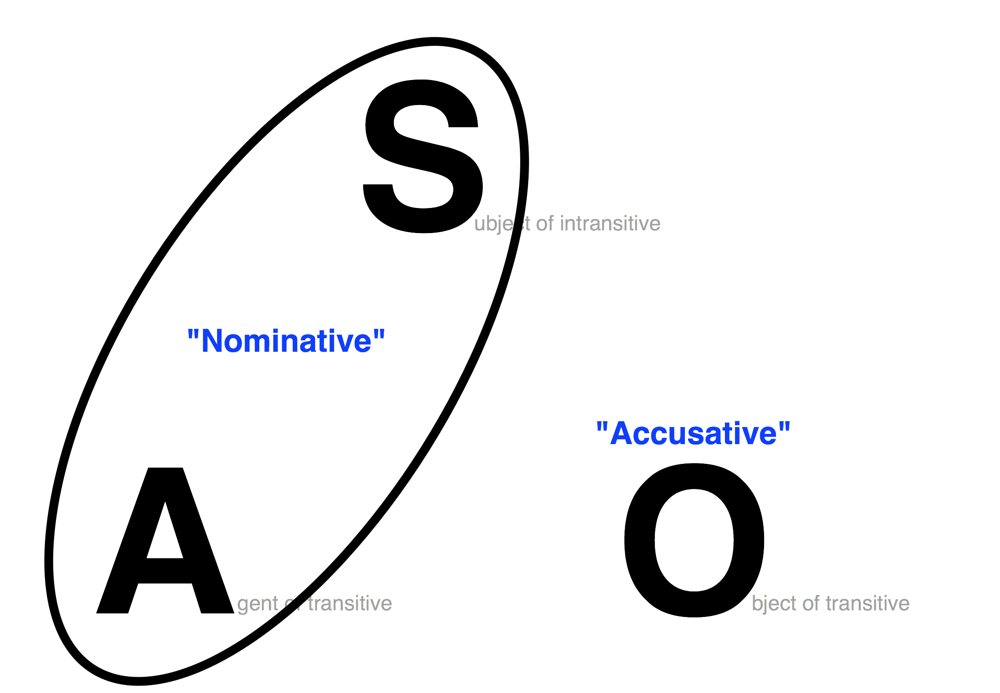 --- ### Nominative/Accusative Systems * Group S and A together * The same case markers are used for S and A * Subjects *and* agents are nominative! * "I slept", "I saw her" * "*Me slept", "*Me saw her" --- "No, let's mark Subject and **object** using the same morpheme!" 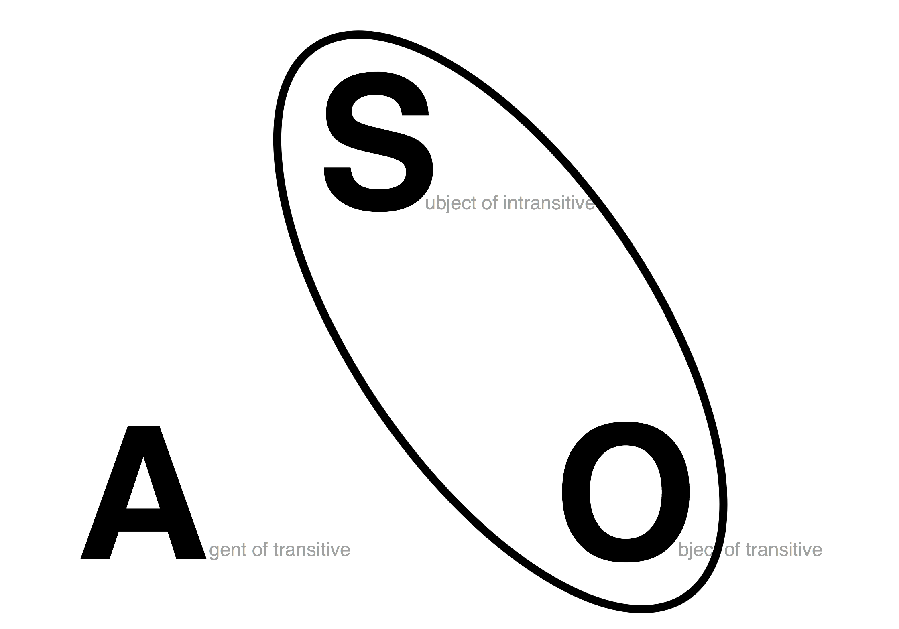 --- This is called a "Ergative/Absolutive" system 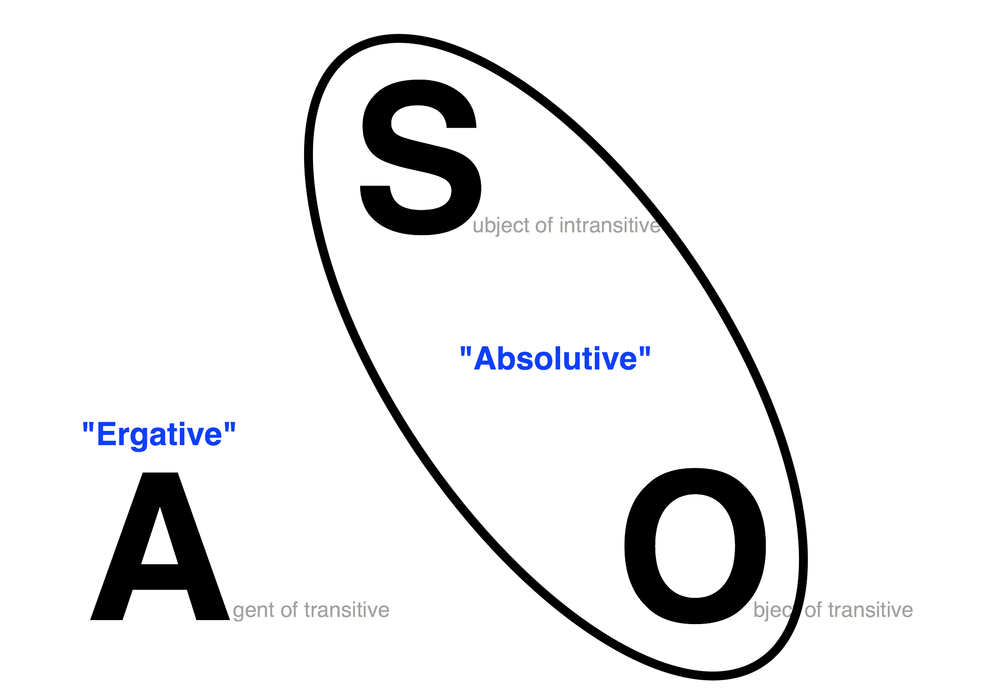 --- The case marker that marks S and O is called *Absolutive Case* --- The case marker that marks A is called *Ergative Case* <small>(Think "Erg-" as "work", as in "Ergonomics" or "Energy")</small> <!-- .element: class="fragment" --> --- ### Ergative/Absolutive Systems * Group S and O together * The same case markers are used for S and O * Subjects *and* objects are absolutive! * Erg/Abs is less common than Nom-Acc * Ergative/Absolutive is found in specific areas * Caucasian languages, Tibetan, Australian languages, Basque, some Iranian languages, some American Indian languages, --- ### "Ergative" and "Absolutive" *replace* Nominative and Accusative Cases * You'll never have a "Nominative" or "Accusative" case in a truly Erg/Abs system * You'll never have an "Ergative" or "Absolutive" case in a truly Nom/Acc system * (Some languages do switch around, like Nepali) --- <lang>Basque</lang><br><ldata>Isolate - "Spain"</ldata> * Jon etorri dira. * Jon-ABS come AUX * *"Jon came."* * Nekanek Jon ikusi ditu. * Nekane-ERG Jon-ABS seen AUX * *"Nekane saw Jon"* --- * Jon etorri dira. - "Jon came." * Nekane-k Jon ikusi ditu. - "Nekane saw Jon." * **S = Unmarked** * **O = Unmarked** * **A = -k** * *Absolutive Case* = Unmarked * *Ergative Case* = -k --- <lang>Georgian</lang><br><ldata>Kartvelian - Georgia</ldata> *bit É‚Äò-ma dzaghl-i bagh- ʃi damala.* boy-erg dog-abs garden-dat.in hid.aor ‚ÄòThe boy hid the dog in the garden.‚Äô *dzaghl-i bagh- ʃi daimala.* dog-abs garden-dat.in hid.aor ‚ÄòThe dog hid in the garden.‚Äô * **S and O = -i** (absolutive case) * **A = -ma** (ergative case) --- ### This is tea from Georgia 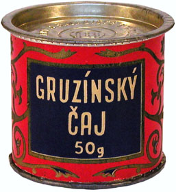 --- # Ergativi-tea! <img class="big" src="humorimg/badpundog.jpg"> <!-- .element: class="fragment" --> --- <section data-background="img/clickerbkgrnd.png"></section> *In an Ergative/Absolutive language, which case markers would be used for the sentences:* ***"Will needlessly dissed Michael Bay. Kevin laughed."*** a) Will = ERG, Michael Bay = ABS, Kevin = ABS b) Will = ABS, Michael Bay = ERG, Kevin = ERG c) Will = ERG, Michael Bay = ABS, Kevin = ERG d) Will = ABS, Michael Bay = ERG, Kevin = ABS --- <section data-background="img/clickerbkgrnd.png"></section> *In an Ergative/Absolutive language, which case markers would be used for the sentences:* ***"Michael Bay misrepresented Optimus Prime. Will cried."*** a) Michael Bay = ERG, Optimus = ABS, Will = ABS b) Michael Bay = ABS, Optimus = ERG, Will = ERG c) Michael Bay = ERG, Optimus = ABS, Will = ERG d) Michael Bay = ABS, Optimus = ERG, Will = ABS --- ### ... and of course, they don't have to group, or the groupings can change. * (Remember Nepali?) --- This is called "Split ergativity" <img class="big" src="lotwimg/SAO.png"> --- **Nepali** - Ergative/Absolutive for *animate* subjects --- **Nepali** - Nominative/Accusative for *inanimate* subjects <img class="big" src="lotwimg/SAO_nomacc.png"> --- **Hindi/Urdu** - Ergative/Absolutive in the past --- **Hindi/Urdu** - Nominative/Accusative in the present <img class="big" src="lotwimg/SAO_nomacc.png"> --- We don't use consistent case names in these situations <img class="big" src="lotwimg/SAO_spliterg.png"> --- ### This is Nepali tea 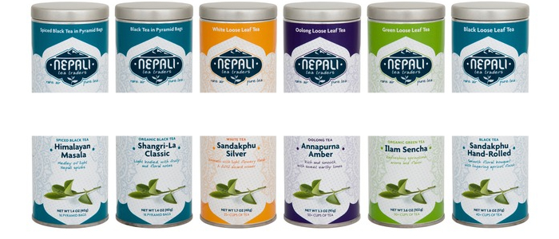 * ## Split Ergativi-tea! --- (Sorry) --- ### So, there are three ways to do Case * Nominative/Accusative - Groups S and A * Ergative/Absolutive - Groups S and O * Split Ergative - No grouping, or variable grouping --- ## Yay! We're done learning how case works! <small>Although we'll keep touching on small variations from time to time...</small> <!-- .element: class="fragment" --> --- Speaking of Ergative languages... --- # Caucasian Languages! --- <img class="big" src="lotwimg/caucasianmap.png"> --- ### There are three macro-families that linguists mean when we say "Caucasian" * **Northwest Caucasian** - Kabardian, Abaza, Abkhaz * **Northeast Caucasian** - Chechen, Lezgic * Some folks classify these as North Caucasian, with "West" and "East" branches * **Kartvelian** (or "South Caucasian") - Georgian, Svan, Zan * We can't yet trace any higher-level families for these languages * (but we *really* want to) --- ### The Caucasus is a "language area" --- ### Language Area An area where languages which are not known to be related all share some features. --- ### Features of Caucasian Languages * Ergativity! * Agglutinative morphology * Ejectives and lots of consonants! * Relatively few vowels üò¢ --- ## Ergativity! * ...been there, done that, got the t-shirt --- <img class="big" src="lotwimg/ergtshirt.jpg"> * # (It's an ergativi-tee!!!) --- <img class="big" src="humorimg/badpundog.jpg"> --- ## Agglutinative morphology --- ### Agglutinative morphology When a language sticks lots of morphemes together to make very complex words, *without changing the morphemes* --- ### Agglutinative Think "glue", you're just sticking moprhemes together! 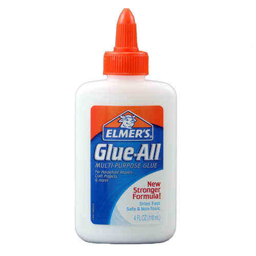 --- <lang>Turkish</lang><br><ldata>Turkic - Turkey</ldata> <img class="big" src="lotwimg/agglutinatingturkish.png"> <small>Thanks [Dr. C. George Boeree](http://webspace.ship.edu/cgboer/morphology.html)!</small> --- ## Ejectives, and *tons* of consonants! --- <lang>Abkhaz</lang><br><ldata>NW Caucasian - Georgia/Russia</ldata> <img class="big" src="lotwimg/abkhaz_consonants.png"> --- ## Disappointingly small vowel systems --- <lang>Abkhaz</lang><br><ldata>NW Caucasian - Georgia/Russia</ldata> <center> <style type="text/css"> .tg {border-collapse:collapse;border-spacing:0;} .tg td{font-family:Arial, sans-serif;font-size:14px;padding:10px 5px;border-style:solid;border-width:1px;overflow:hidden;word-break:normal;} .tg th{font-family:Arial, sans-serif;font-size:14px;font-weight:normal;padding:10px 5px;border-style:solid;border-width:1px;overflow:hidden;word-break:normal;} </style> <table class="tg"> <tr> <th class="tg-031e">High</th> <th class="tg-031e">ɨ</th> </tr> <tr> <td class="tg-031e">Low</td> <td class="tg-031e">ə</td> </tr> </table> </center> --- **This is a recurring pattern: Lots of consonants, few vowels, and vice versa** <small>This gets into information and coding theory, which gets awesome, quickly</small> <!-- .element: class="fragment" --> --- # About those languages... --- ## Kartvelian <img class="big" src="lotwimg/kartvelianmap.png"> --- ### Kartvelian * Georgian (around 4.5m speakers) * Mingrelian (around 500k speakers) * Laz (around 200k speakers) * Svan (around 40k speakers) --- <lang>Georgian</lang><br><ldata>Kartvelian - Georgia</ldata> * Vowel heavy for a caucasian language * (... still only 5 of them...) * Official language of Georgia * Really awesome writing system --- 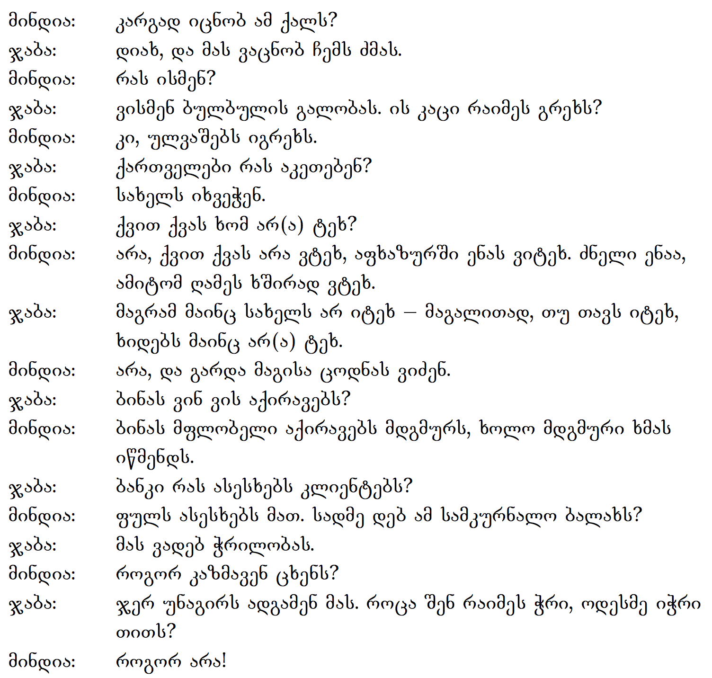 --- ### One very infamous speaker 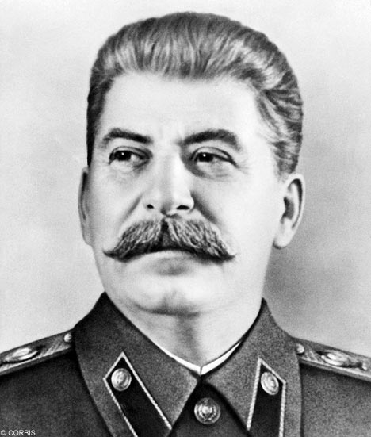 --- ### Joseph Stalin * Born as "·Éò·Éù·É°·Éî·Éë ·Éë·Éî·É°·Éê·É†·Éò·Éù·Éú·Éò·É° ·É´·Éî ·ÉØ·É£·É¶·Éê·É®·Éï·Éò·Éö·Éò" in Gori, Georgia * ([iɔsɛb bɛsɑriɔnis dzɛ d ʒu…£…ë ʃvili]) * Changed his name to "Iosif Vissarionovich Stalin" * Stalin = Russian word for "Steel" + "-in", made of. * Lenin = Russian word for "Iron" + "-in", made of. * Never quite mastered the Russian language * Killed between 34-49 *million* people with his policies * Likely killed by his interior minister --- 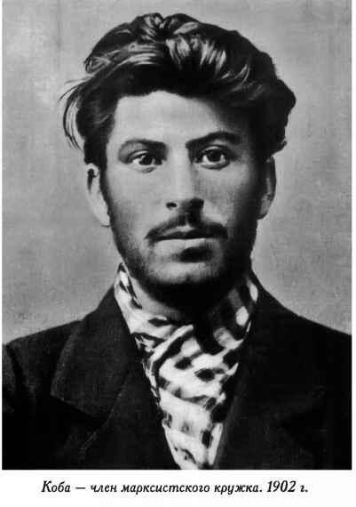 --- ## Northwest Caucasian 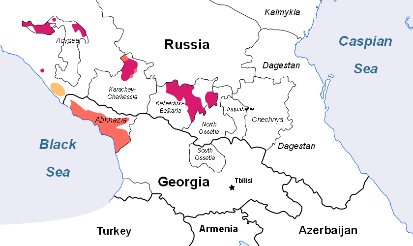 (Red = Adyghe/Kabardian, Orange = Abhaz/Abaza) --- ### Northwest Caucasian * Adyghe (around 500k speakers) * Kabardian (around 1.6m speakers) * These two are often called "Circassian" together * Abkhaz (around 100k speakers) * Abaza (around 50k speakers) --- <lang>Abkhaz</lang><br><ldata>NW Caucasian - Russia/Georgia</ldata> <iframe data-autoplay width="840" height="690" src="http://www.youtube.com/embed/x0-C-lloFJA"></iframe> --- ## Northeast Caucasian 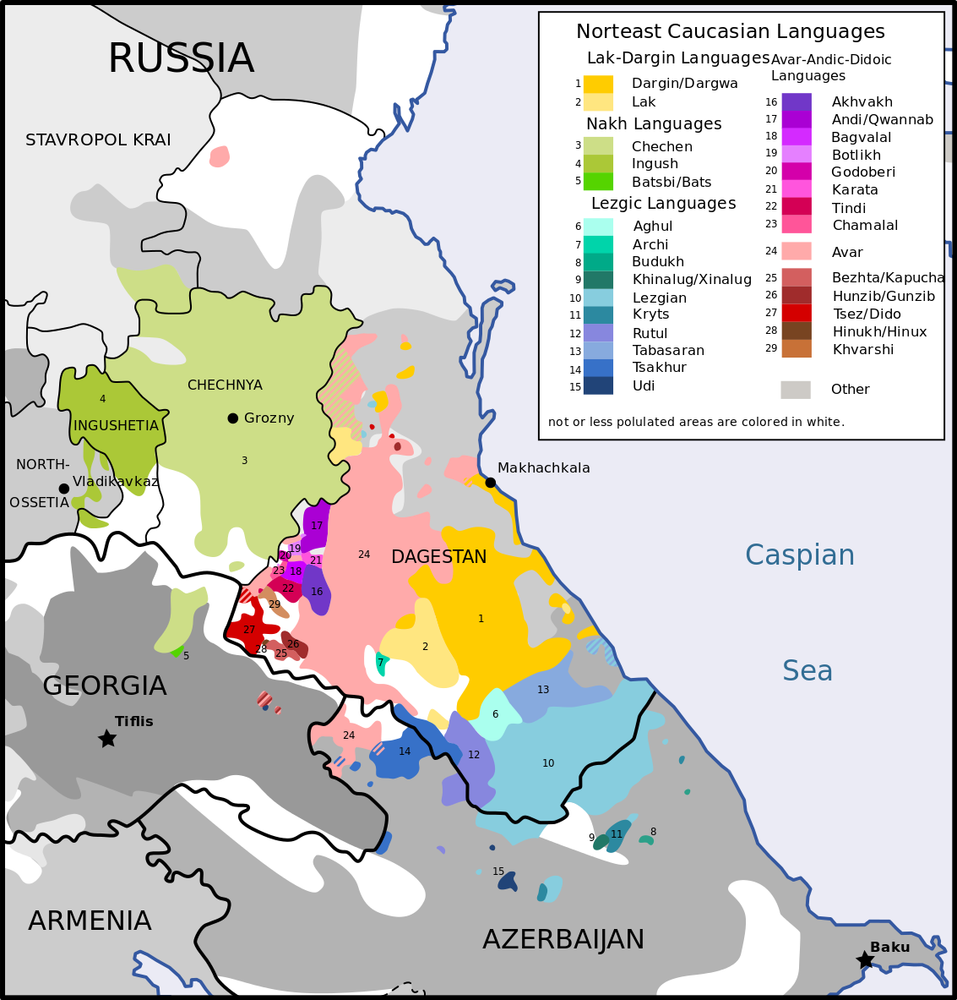 --- ### Northeast Caucasian * Chechen (around 1.3m speakers) * Avar (around 700k speakers) * Lezgi (around 500k speakers) --- <lang>Chechen</lang><br><ldata>NE Caucasian - Chechnya (Russia)</ldata> <iframe data-autoplay width="840" height="690" src="http://www.youtube.com/embed/NMXW7e0B9Cc"></iframe> --- # Speaking of lots of consonants... --- ## Dravidian Languages! --- ### Remember this map? <img class="big" src="lotwimg/languagesofindia.jpg"> --- 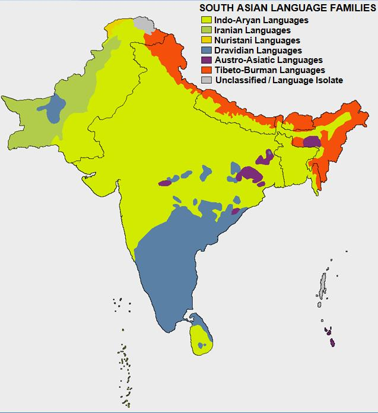 --- ### Dravidian Languages * A top-level language family * Proto-Dravidian has been proposed as the language of the Indus River Civilization * (... but not confirmed) * Spoken by ~21% of India's population --- ### Major Dravidian Languages * Telugu - 85m speakers * Tamil - 70m speakers * Kannada - 49m speakers * Malayalam - 38m speakers --- ### Features of Dravidian * Agglutinative Morphology * SOV * Grammatical Gender! * Past/Non-Past tense system * Lots of small sound distinctions! --- ### Oh, and awesome writing systems! <img class="big" src="lotwimg/indicscripts.gif"> --- ## Small sound distinctions? --- <lang>Malayalam</lang><br><ldata>Dravidian - India</ldata> 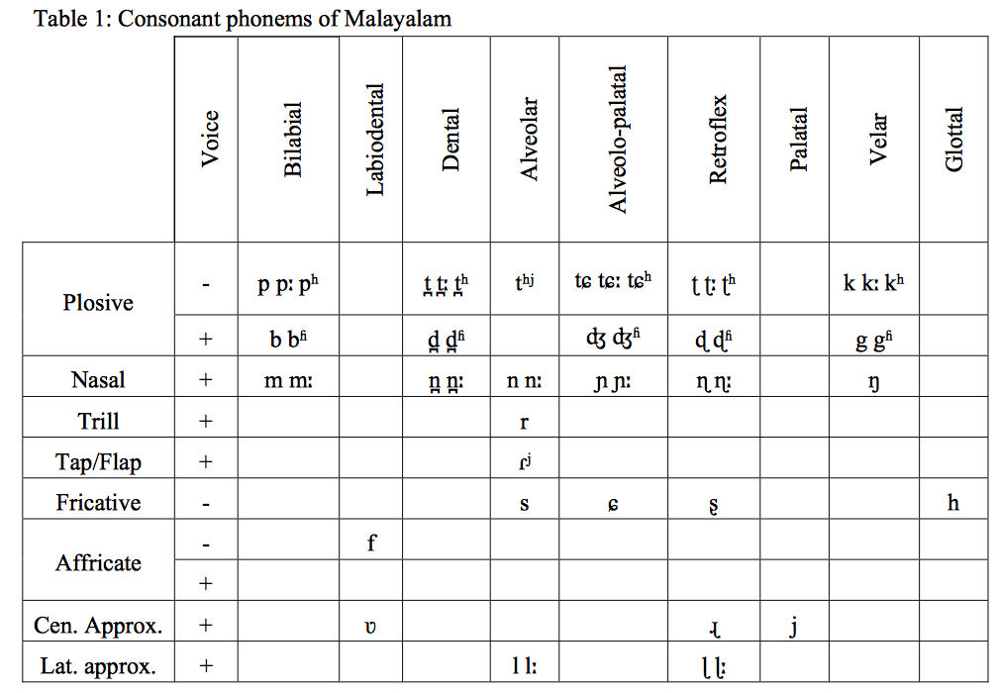 --- <img class="big" src="ling_memes/contrastsdentalsalveolars.jpg"> --- <lang>Malayalam</lang><br><ldata>Dravidian - India</ldata> 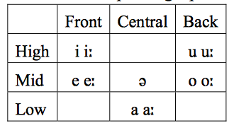 * (again, lots of consonants mean fewer vowels needed!) --- <lang>Malayalam</lang><br><ldata>Dravidian - India</ldata> <iframe data-autoplay width="840" height="690" src="http://www.youtube.com/embed/27MJm2VMa48"></iframe> --- <lang>Telugu</lang><br><ldata>Dravidian - India</ldata> <iframe data-autoplay width="840" height="690" src="http://www.youtube.com/embed/Rf-i1Pn_sgg"></iframe> --- ## Wrapping up * Ergative languages group S and O * Caucasian languages are awesome * You should know their features. * Dravidian languages are awesome * You should know their features, too! --- ## Next time: Turkic and Semitic Languages! <correct>Pereltsvaig Ch. 5</correct> --- <huge>Thank you!</huge> http://savethevowels.org/world/slides/lotw_8.html